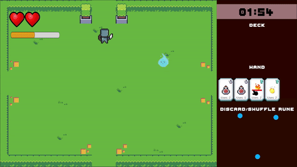

Double Dungeon

Double Dunegon was an academic project where two players shared the same computer. The Knight used the keyboard, and the Spirit used the mouse. The restrictions for this project were as follows: it had to involve two players, and both players needed to have different control schemes.
I served as producer for Double Dungeon, as well as game designer. I kept the team on track & handled documentation, all while creating mockups of cards, enemies, and powers for the team to implement.
Double Dungeon can be played here: Double Dungeon Itch Page